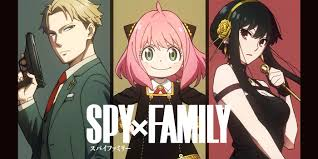

All About Anime

This is Himiko Toga. She is in the league of villans from the My Hero Academia series.
The main character of the My Hero Academia series is Izuku Midoriya. A boy born quirkless. When he was being attacked by a sludge villan he met All Might. All might is the number 1 hero, he is known to be called The Symbol of peace. After Izuku was saved by All Might he got an autograph but when All Might was leaving, Izuku had grabbed onto All Might's leg. All Might had to stop because he didn't want the kid to fall. When they landed on a nearby rooftop Izuku asked All Might if he could be a hero without a quirk. All Might said that he can't and that crushed Izukus dream. later in the show/manga Izuku was walking home after saving a classmate from the same villan that attacked him. All Might had showed up and scared Izuku. Then All Might started talking about his quirk and how he wanted Izuku to be the next one to inherrit his quirk.
For a lot of people that i've known this show/manga is really fun and interesting! I hope that you'd also like it if you watched/read it!
Spy x Family is a show about a Telepath, an Assasin and a Spy. The Telepaths name is Anya Forger, the Assasins name is Yor Briar code name:Thorn Princess and the Spys name is Loid forger code name: Twilight. They all become the Forger family. The reason that Twilight has made this family in because of operation Strix. Operation Strix is for Twilight to get in close with Donovan Desmond and tell him that it's time to end this war. However it's not that easy, first Anya has to pass the entrance exam into Eden Academy and once she does that she has to become an imperial Scholar. It's a twist and turn between missions, assassinations and getting close to the target.
Be sure to watch and read about Spy x Family with it's amazing drama!

Naruto is a show about a boy born with the Nine Tailed Fox inside of him. When Naruto was a little kid he tried so hard to fit in, but people feared him for was inside his body. As he grew older he learned to push those feeling away and live a good life. But things don't go to well, when the groups for becoming a ninja form he's paired up Sasuke Uchiha and Sakura Haruno. Naruto and Sasuke really don't like each other. So their teacher Kakashi sensei has to make sure they fight to their death. Naruto eventually learns to control Nine Tails in his training with Pervy Sage. As they move along with life they learn new skills, fight/help people and get betrayed.
If you are going to read it or watch it I hope that you like it as much as I do!!

Sailor Moon Crystal is basically an improved version of the original Sailor Moon anime. But if you don't know what either of thease are I will explain. Sailor moons name is Usagi. She is an ordinary girl who has bad grades and is always late for class. She meets a cat with a moon cresant on it's forehead, the cats name is Luna. Luna gives Usagi a transforming pin. Usagi clicks on the pin and she turns into Sailor Moon. Sailor Moon has to save people from all the evil/possesed people. She also has to find all the other guardians that are part of her team.
Sailor Moon Crystal is a Romance, Mystery, Fictional anime. But did you know that the original Sailor Moon came out March 7th 1992?
I hope you enjoyed learning about a few animes and I really hope that whoever is reading this will watch/read the anime!!!!!